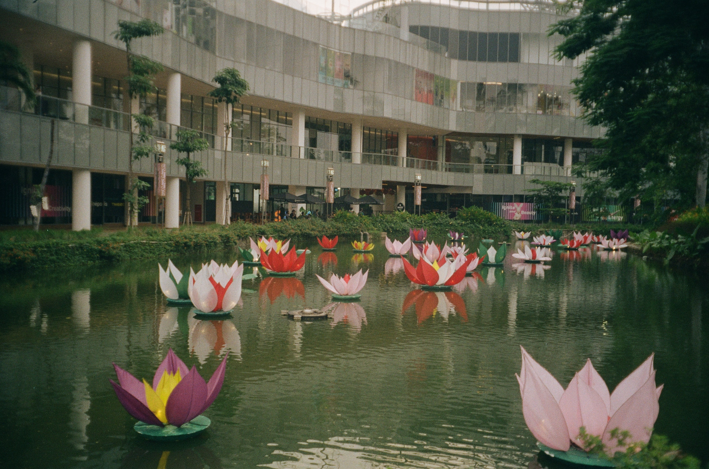

Colorplus 200 vs Fujicolor 200: Menilai Dua Film Negatif Warna Populer
Saat memilih film negatif warna untuk kamera analog Anda, dua pilihan yang sering muncul adalah Colorplus 200 dan Fujicolor 200. Keduanya adalah film berwarna dengan ISO 200 yang menawarkan kualitas yang baik untuk pemotretan sehari-hari, tetapi mereka memiliki karakteristik yang berbeda. Artikel ini akan membahas perbedaan utama antara Colorplus 200 dan Fujicolor 200, membantu Anda memilih film yang tepat untuk kebutuhan fotografi Anda.
1. Warna dan Kontras
Colorplus 200: diproduksi oleh Kodak, dikenal dengan karakter warnanya yang hangat dan kontras yang sedikit lembut. Warna yang dihasilkan cenderung lebih hangat dengan nuansa yang lebih kekuningan, membuatnya ideal untuk potret manusia dan lanskap yang membutuhkan warna yang kaya namun alami. Kontrasnya yang lembut dapat memberikan hasil yang lebih halus dan tidak terlalu tajam, sehingga cocok untuk pemotretan di kondisi pencahayaan yang lebih lembut.
Fujicolor 200: dari Fujifilm, memiliki karakter warna yang cenderung lebih netral dengan kontras yang lebih tinggi dibandingkan Colorplus 200. Warna yang dihasilkan lebih seimbang dengan reproduksi warna yang cenderung lebih akurat dan sedikit dingin. Ini membuat Fujicolor 200 sangat cocok untuk pemotretan yang membutuhkan warna yang lebih cerah dan tajam, serta untuk kondisi pencahayaan yang bervariasi.
2. Grain dan Detail
Colorplus 200: Kodak Colorplus 200 memiliki butiran (grain) yang relatif halus, tetapi dalam kondisi pencahayaan rendah atau pengambilan gambar dengan eksposur panjang, grain bisa menjadi lebih terlihat. Meskipun demikian, film ini memberikan detail yang cukup baik untuk kebanyakan aplikasi sehari-hari.
Fujicolor 200: Fujicolor 200 juga memiliki grain yang halus, tetapi sering kali menghasilkan gambar dengan detail yang sedikit lebih tajam dibandingkan dengan Colorplus 200. Grain pada Fujicolor 200 biasanya lebih seragam dan kurang terlihat, bahkan dalam kondisi pencahayaan rendah.
3. Ketahanan Terhadap Overexposure dan Underexposure
Colorplus 200: Film ini umumnya cukup toleran terhadap overexposure, membuatnya lebih mudah diatur dalam berbagai kondisi pencahayaan. Meskipun demikian, di bawah kondisi underexposure, detail mungkin bisa hilang lebih cepat dibandingkan dengan Fujicolor 200.
Fujicolor 200: Fujicolor 200 memiliki ketahanan yang baik terhadap underexposure, dan biasanya dapat menangani variasi pencahayaan dengan baik. Overexposure juga dapat diterima, tetapi hasilnya cenderung lebih sedikit menyimpang dari eksposur yang benar dibandingkan Colorplus 200.